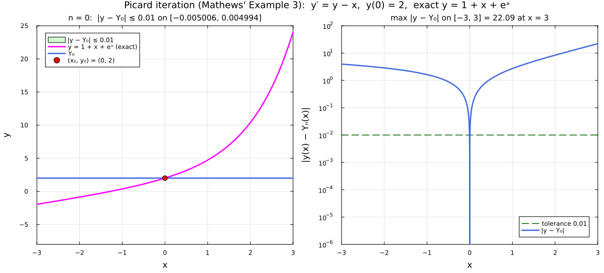
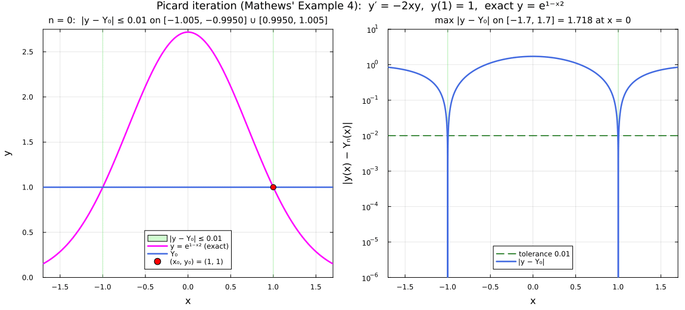
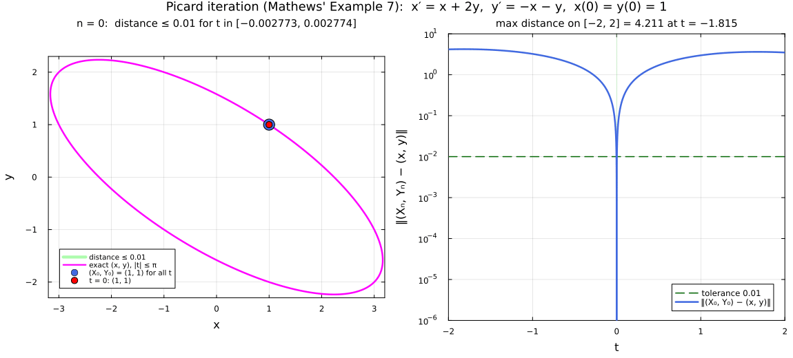

Picard Iteration
Source inspiration: (Mathew 2000-2019).
Description
Picard iteration, also called the method of successive approximations, solves the initial value problem \(y' = f(x, y)\), \(y(x_0) = y_0\) by turning it into the equivalent integral equation \(y(x) = y_0 + \int_{x_0}^{x} f(t, y(t))\,dt\) and iterating on that equation. The first approximation is the constant function \(Y_0(x) = y_0\), and each new approximation is obtained by substituting the previous one into the integral:
\[ Y_{n+1}(x) = y_0 + \int_{x_0}^{x} f\bigl(t, Y_n(t)\bigr)\,dt, \qquad n = 0, 1, 2, \ldots \]
The iterates are functions, not numbers. This is the second meaning of “Picard iteration”: the first is fixed point iteration \(p_{n+1} = g(p_n)\) for an equation \(x = g(x)\), and Picard’s method for differential equations is fixed point iteration applied to the integral operator on the right-hand side. If \(f\) and \(\partial f/\partial y\) are continuous near \((x_0, y_0)\), the iterates converge to the unique solution on a small enough interval around \(x_0\) (Theorem 2′). This is the classical proof of the existence theorem, and it needs no numerical arithmetic at all: the integrals are done exactly, which a computer algebra system does without the drudgery that makes the method tedious by hand.
Mathews’ module (a revision of his 1989 article Symbolic Computational Algebra Applied to Picard Iteration, Mathematics and Computer Education, Vol. 23, No. 2) applies the method to first-order equations, to systems of two and three first-order equations, and to second-order equations, in twelve examples. In all of them \(f\) is a polynomial, so every iterate is a polynomial. Every iterate on this page was recomputed exactly with SymPy in rational arithmetic, and every exact solution was checked by substitution into its differential equation and initial conditions.
Animations
Each animation below shows Picard’s iterates appearing one per frame, \(n = 0, 1, \ldots, 6\), against the exact solution. The left panel is the graph Mathews draws for the example, in his window and with his colours for the exact solution (magenta) and the initial point (red dot); the current iterate is blue and the earlier ones are gray. The right panel is new. It plots the error of the current iterate on a logarithmic scale, \(|y(x) - Y_n(x)|\) (in Case 3 the distance \(\lVert (X_n(t), Y_n(t)) - (x(t), y(t)) \rVert\)), with the errors of the earlier iterates in gray and the tolerance \(0.01\) dashed. Green shading in both panels marks where the error is at most \(0.01\). The left panel’s title gives that interval, and the right panel’s title gives the largest error on the window and where it occurs. The error is exactly zero at the initial point, and wherever it is below \(10^{-6}\) its curve leaves the bottom of the right panel; a curve that leaves Mathews’ window is cut at the window’s edge. Each frame is shown for one second, and the last for three. The scripts compute the iterates exactly, as polynomials with rational coefficients, and check them against formulas (6) and (7) and the iterates \(X_6\), \(Y_6\) of Example 6 and \(Y_6\) of Example 10. They evaluate the errors in 256-bit arithmetic at \(20001\) equally spaced points of the window and refine the ends of each shaded interval by bisection.
Mathews’ module links no animation, and his animation archive has none for Picard iteration, so all four animations are new, with no Mathews original. They animate the graphs of his Examples 3, 4, 7 and 11, with his windows and parameter ranges. Mathews shows the iterates in groups of three and then all together; here they appear one at a time. Not animated are Example 8, whose iterates Mathews draws as space curves in three dimensions, and Example 12, which is Example 11 shifted by \(1\) in \(x\). Examples 1, 2, 5, 9 and 10 have no graphs, and Example 6 graphs only its exact solution, the ellipse drawn in every frame of Case 3.
Julia source scripts that generated these animations are linked under each case.
Case 1 — First-order equation (Example 3), \(y' = y - x\), \(y(0) = 2\), \(Y_0\) to \(Y_6\) on \(-3 \le x \le 3\)
Behavior: Every iterate passes through the initial point \((0, 2)\), where its error is zero, and near \(x_0 = 0\) the error of \(Y_n\) behaves like \(2|x|^{n+1}/(n+1)!\) (by formula (6)), so the dip in the right panel widens with every iteration. The interval where \(|y - Y_n| \le 0.01\) widens at every step, from \([-0.005006, 0.004994]\) for \(Y_0\) to \([-0.5968, 0.5795]\) for \(Y_3\) and \([-1.606, 1.561]\) for \(Y_6\), and always reaches a little farther to the left of \(x_0\) than to the right. Away from \(x_0\) the gap stays large: the largest error on Mathews’ interval is at \(x = 3\) for every iterate and falls from \(22.09\) to \(1.107\), as in the table of Example 3. \(Y_1\) dips below the bottom of the window near \(x = -3\), where \(Y_1(-3) = -8.5\).

Case 2 — Initial point \(x_0 = 1\) (Example 4), \(y' = -2xy\), \(y(1) = 1\), \(Y_0\) to \(Y_6\) on \(-1.7 \le x \le 1.7\)
Behavior: \(Y_n\) and \(y\) depend on \(x\) only through \(w = 1 - x^2\) (formula (7)), so both panels are symmetric about \(x = 0\). Since \(w = 0\) at \(x = -1\) as well as at \(x_0 = 1\), \(Y_n(-1) = 1 = y(-1)\) for every \(n\), and each iterate is as accurate near \(x = -1\) as near the initial point. The shading is therefore two intervals, around \(x = -1\) and \(x = 1\), which widen until at \(n = 4\) they merge into \([-1.440, 1.440]\); there the error at \(x = 0\), \(y(0) - Y_4(0) = 0.009948\), is just under the tolerance. At \(n = 6\) the interval is \([-1.674, 1.674]\), and the largest error, \(0.01377\) at both ends \(x = \pm 1.7\), is still above \(0.01\). \(Y_1\) and \(Y_3\) drop below the bottom of Mathews’ window near the ends, \(Y_1\) for \(|x| > \sqrt2 \approx 1.414\) and \(Y_3\) for \(|x| > 1.611\).

Case 3 — A system in the phase plane (Example 7), \(x' = x + 2y\), \(y' = -x - y\), \(x(0) = y(0) = 1\), \(n = 0\) to \(6\) on \(-2 \le t \le 2\)
Behavior: The left panel is drawn to scale, with equal units on both axes. \((X_0, Y_0)\) is the single point \((1, 1)\). Every later iterate is a polynomial curve through \((1, 1)\) at \(t = 0\) that runs along the ellipse \(x^2 + 2xy + 2y^2 = 5\) near that point and leaves it toward the ends \(t = \pm 2\); \((X_1, Y_1)\) is a straight line and \((X_2, Y_2)\) a parabola, and both leave the window at both ends. The stretch of \(t\) where the distance to the exact point is at most \(0.01\) grows from \([-0.002773, 0.002774]\) for \(n = 0\) to \([-1.460, 1.466]\) for \(n = 6\), which covers nearly half of the ellipse (its period is \(2\pi\)). The largest distance on \(-2 \le t \le 2\) rises from \(4.211\) to \(4.750\) at the first step and falls at every step after that, to \(0.08875\), as in the table of Example 7; for \(n \ge 1\) it is at an end of the interval, alternately \(t = 2\) and \(t = -2\).

Case 4 — Second-order equation (Example 11), \(y'' = -2y' - y\), \(y(0) = 1\), \(y'(0) = 2\), \(Y_0\) to \(Y_6\) on \(-2 \le x \le 2\)
Behavior: Every iterate satisfies both initial conditions, so every curve passes through \((0, 1)\) with slope \(2\); \(Y_0 = 1 + 2x\) is the tangent line there. The interval where \(|y - Y_n| \le 0.01\) widens at every step, from \([-0.06220, 0.06433]\) for \(Y_0\) to \([-1.050, 1.009]\) for \(Y_6\). The largest error on Mathews’ interval is at \(x = -2\) for \(n \le 3\) and at \(x = 2\) for \(n \ge 4\), and it falls from \(33.95\) to \(2.773\), as in the table of Example 11. Mathews’ window cuts off the exact solution itself, which leaves the bottom edge at \(x \approx -1.270\) and reaches \(y(-2) = -5e^2 \approx -36.95\). Every iterate from \(Y_1\) on also leaves the window on the left, and \(Y_2\) on the right as well.

Existence and Uniqueness
If \(f(x, y)\) and \(f_y(x, y)\) are continuous on the rectangle \(R = \{(x, y) : a \le x \le b,\ c \le y \le d\}\) and \((x_0, y_0)\) is an interior point of \(R\), then the initial value problem
\[ y' = f(x, y), \qquad y(x_0) = y_0 \tag{1} \]
has a unique solution \(y(x)\) for all \(x\) in some (smaller) interval \(x_0 - \delta \le x \le x_0 + \delta\) contained in \([a, b]\).
The interval can be smaller than \([a, b]\) because the solution may leave the rectangle before \(x\) reaches \(a\) or \(b\). Example 2 below, \(y' = 1 + y^2\), \(y(0) = 0\), has \(f\) and \(f_y\) continuous everywhere, but its solution \(\tan x\) exists only for \(|x| < \pi/2\).
Picard’s Method for First-Order Equations
Integrating (1) from \(x_0\) to \(x\) shows that a continuous function \(y\) solves (1) if and only if it solves the integral equation
\[ y(x) = y_0 + \int_{x_0}^{x} f\bigl(t, y(t)\bigr)\,dt. \tag{2} \]
Picard’s method uses the right-hand side of (2) to generate a sequence of functions.
The solution of the initial value problem (1) is found by constructing recursively the sequence of functions \(\{Y_n(x)\}_{n=0}^{\infty}\) with
\[ Y_0(x) = y_0, \qquad Y_{n+1}(x) = y_0 + \int_{x_0}^{x} f\bigl(t, Y_n(t)\bigr)\,dt \quad \text{for } n \ge 0. \tag{3} \]
Then the solution \(y(x)\) of (1) is the limit
\[ y(x) = \lim_{n \to \infty} Y_n(x). \tag{4} \]
Mathews states the theorem in this form. The following quantitative version is a general result, not a statement about any one example; it says where the limit (4) holds and how fast.
Let \(f\) be continuous on \(R = \{|x - x_0| \le \alpha,\ |y - y_0| \le \beta\}\), with \(|f(x, y)| \le M\) on \(R\), and let \(f\) satisfy a Lipschitz condition \(|f(x, y) - f(x, z)| \le L\,|y - z|\) on \(R\) (it does with \(L = \max_R |f_y|\) when \(f_y\) is continuous). Put
\[ \delta = \min\Bigl(\alpha,\ \frac{\beta}{M}\Bigr). \]
Then for \(|x - x_0| \le \delta\) every iterate \(Y_n(x)\) stays in \(R\), the iterates converge uniformly to the unique solution \(y(x)\), and
\[ |y(x) - Y_n(x)| \le \frac{M}{L}\,\frac{\bigl(L\,|x - x_0|\bigr)^{n+1}}{(n+1)!}\,e^{L|x - x_0|}. \tag{5} \]
Proof sketch. The choice of \(\delta\) keeps \(|Y_n(x) - y_0| \le M|x - x_0| \le \beta\), so every iterate stays in \(R\). From \(|Y_1 - Y_0| \le M|x - x_0|\) and the Lipschitz condition, induction gives \(|Y_{k+1}(x) - Y_k(x)| \le M L^k |x - x_0|^{k+1}/(k+1)!\). These are the terms of the series for \((M/L)\bigl(e^{L|x - x_0|} - 1\bigr)\), so \(Y_n = Y_0 + \sum_{k<n} (Y_{k+1} - Y_k)\) converges uniformly, the limit satisfies (2) by passing to the limit under the integral, and summing the tail from \(k = n\) gives (5). If \(y\) and \(z\) both solve (2), then \(|y - z| \le L \int |y - z|\), and the same induction shows \(|y - z| \le C L^k |x - x_0|^k / k!\) for every \(k\), so \(y = z\).
The bound (5) has a factorial in the denominator, so on the interval \(|x - x_0| \le \delta\) the convergence is eventually faster than geometric. It says nothing about \(x\) outside that interval, and in the examples the error of a fixed iterate is largest far from \(x_0\).
Algorithm
Given \(f(x, y)\), the initial value \((x_0, y_0)\) and the number of iterations \(n_{\max}\):
- Set \(Y_0(x) = y_0\).
- For \(k = 0, 1, \ldots, n_{\max} - 1\): substitute \(Y_k(t)\) for \(y\) in \(f(t, y)\), integrate from \(x_0\) to \(x\), and set \(Y_{k+1}(x) = y_0 + \int_{x_0}^{x} f(t, Y_k(t))\,dt\), simplified (expanded) as a function of \(x\).
- Return \(Y_0, Y_1, \ldots, Y_{n_{\max}}\); \(Y_{n_{\max}}\) approximates \(y(x)\) near \(x_0\).
Mathews’ Mathematica subroutine PicardIteration does exactly this with \(n_{\max} = 6\) in most examples. After each integration it replaces the new iterate by its Taylor polynomial of degree \(100\) about \(x_0\), which keeps the expressions finite when \(f\) is not a polynomial; in the examples below every iterate is a polynomial of degree at most \(31\), so this truncation changes nothing. A second version stores the iterates in a list so that they can be graphed together (Examples 3 and 4).
Example 1 — \(y' = y - x\), \(y(0) = 2\)
Use Picard iteration to find the solution of
\[ y' = y - x, \qquad y(0) = 2. \]
Here \(f(x, y) = y - x\), \(x_0 = 0\) and \(y_0 = 2\).
Step 1: \(Y_0(x) = 2\), so
\[ Y_1(x) = 2 + \int_0^x (2 - t)\,dt = 2 + 2x - \frac{x^2}{2}. \]
Step 2:
\[ Y_2(x) = 2 + \int_0^x \Bigl(2 + 2t - \frac{t^2}{2} - t\Bigr)dt = 2 + 2x + \frac{x^2}{2} - \frac{x^3}{6}. \]
Steps 3 to 6: continuing in the same way,
\[ \begin{aligned} Y_3(x) &= 2 + 2x + \frac{x^2}{2} + \frac{x^3}{6} - \frac{x^4}{24}, \\ Y_4(x) &= 2 + 2x + \frac{x^2}{2} + \frac{x^3}{6} + \frac{x^4}{24} - \frac{x^5}{120}, \\ Y_5(x) &= 2 + 2x + \frac{x^2}{2} + \frac{x^3}{6} + \frac{x^4}{24} + \frac{x^5}{120} - \frac{x^6}{720}, \\ Y_6(x) &= 2 + 2x + \frac{x^2}{2} + \frac{x^3}{6} + \frac{x^4}{24} + \frac{x^5}{120} + \frac{x^6}{720} - \frac{x^7}{5040}. \end{aligned} \]
The pattern is
\[ Y_n(x) = 2 + 2x + \sum_{k=2}^{n} \frac{x^k}{k!} - \frac{x^{n+1}}{(n+1)!}, \qquad n \ge 1, \tag{6} \]
and it holds for every \(n\): substituting (6) into (3) gives \(Y_{n+1} = 2 + \int_0^x \bigl(2 + t + \sum_{k=2}^{n} t^k/k! - t^{n+1}/(n+1)!\bigr)\,dt\), which is (6) with \(n + 1\) in place of \(n\).
The exact solution. The equation is linear, and its solution is \(y(x) = 1 + x + e^x\). Its Maclaurin series is
\[ y(x) = (1 + x) + \Bigl(1 + x + \frac{x^2}{2!} + \frac{x^3}{3!} + \cdots\Bigr) = 2 + 2x + \sum_{k=2}^{\infty} \frac{x^k}{k!}. \]
When the last term of \(Y_n\) is dropped, what is left is the Maclaurin polynomial of degree \(n\) of \(y(x)\), and the sum of the series is the solution: \(\lim_{n\to\infty} Y_n(x) = 1 + x + e^x\) for every \(x\).
Verification: \(y' = 1 + e^x\) and \(y - x = 1 + e^x\), so \(y' = y - x\), and \(y(0) = 1 + 0 + 1 = 2\). At \(x = 1\), where \(y(1) = 2 + e = 4.718281828\), the iterates approach the solution:
| \(n\) | \(Y_n(1)\) | \(y(1) - Y_n(1)\) |
|---|---|---|
| 0 | \(2\) | \(2.718\) |
| 1 | \(3.5\) | \(1.218\) |
| 2 | \(4.333333333\) | \(0.3849\) |
| 3 | \(4.625\) | \(0.09328\) |
| 4 | \(4.7\) | \(0.01828\) |
| 5 | \(4.715277778\) | \(0.003004\) |
| 6 | \(4.717857143\) | \(0.0004247\) |
Example 2 — \(y' = 1 + y^2\), \(y(0) = 0\)
Use Picard iteration to find the solution of
\[ y' = 1 + y^2, \qquad y(0) = 0. \]
Step 1: \(Y_0 = 0\), so \(Y_1(x) = \int_0^x 1\,dt = x\).
Step 2: \(Y_2(x) = \int_0^x (1 + t^2)\,dt = x + \dfrac{x^3}{3}\).
Step 3: \(Y_3(x) = \displaystyle\int_0^x \Bigl(1 + \bigl(t + \tfrac{t^3}{3}\bigr)^2\Bigr)dt = x + \frac{x^3}{3} + \frac{2x^5}{15} + \frac{x^7}{63}\).
Steps 4 and 5:
\[ \begin{aligned} Y_4(x) &= x + \frac{x^3}{3} + \frac{2x^5}{15} + \frac{17x^7}{315} + \frac{38x^9}{2835} + \frac{134x^{11}}{51975} + \frac{4x^{13}}{12285} + \frac{x^{15}}{59535}, \\ Y_5(x) &= x + \frac{x^3}{3} + \frac{2x^5}{15} + \frac{17x^7}{315} + \frac{62x^9}{2835} + \frac{1142x^{11}}{155925} + \frac{13324x^{13}}{6081075} + \cdots + \frac{8x^{29}}{21210236775} + \frac{x^{31}}{109876902975}. \end{aligned} \]
Squaring doubles the degree, so the degree of \(Y_n\) is \(2^n - 1\) (\(1, 3, 7, 15, 31\) for \(n = 1, \ldots, 5\)), and \(Y_5\) has \(16\) nonzero terms, one for each odd power from \(x\) to \(x^{31}\). Mathews stops after these five iterations.
The exact solution. Separating variables gives \(\arctan y = x\), so \(y(x) = \tan x\). Its Maclaurin series begins
\[ \tan x = x + \frac{x^3}{3} + \frac{2x^5}{15} + \frac{17x^7}{315} + \frac{62x^9}{2835} + \frac{1382x^{11}}{155925} + \cdots \]
The first five terms of \(Y_5\) are the same as the Maclaurin series for \(\tan x\); the sixth already differs (\(1142/155925\) against \(1382/155925\)). For each \(n = 1, \ldots, 5\), \(Y_n\) agrees with \(\tan x\) through the term in \(x^{2n-1}\): each iteration adds one correct term, while the number of terms doubles (\(1, 2, 4, 8, 16\)).
The interval of convergence. Theorem 1 gives existence only near \(x_0\), and here the restriction matters: \(\tan x\) has poles at \(x = \pm\pi/2\). On the rectangle \(R = \{|x| \le \alpha,\ |y| \le \beta\}\) Theorem 2′ gives \(M = 1 + \beta^2\) and \(\delta = \min\bigl(\alpha, \beta/(1 + \beta^2)\bigr)\). The largest value of \(\beta/(1 + \beta^2)\) is \(1/2\), at \(\beta = 1\), so the theorem guarantees convergence only on \(|x| \le 1/2\). With \(\beta = 1\) the Lipschitz constant is \(L = \max |2y| = 2\), and at \(x = 1/2\) the bound (5) is \(\bigl(1^{n+1}/(n+1)!\bigr)\,e\):
| \(n\) | \(Y_n(1/2)\) | \(\tan(1/2) - Y_n(1/2)\) | bound (5) |
|---|---|---|---|
| 0 | \(0\) | \(0.5463\) | \(2.718\) |
| 1 | \(0.5\) | \(0.04630\) | \(1.359\) |
| 2 | \(0.5416666667\) | \(0.004636\) | \(0.4530\) |
| 3 | \(0.5459573413\) | \(3.451 \times 10^{-4}\) | \(0.1133\) |
| 4 | \(0.5462824389\) | \(2.005 \times 10^{-5}\) | \(0.02265\) |
| 5 | \(0.5463015370\) | \(9.529 \times 10^{-7}\) | \(0.003775\) |
The bound holds at every step, with a wide margin. Outside the guaranteed interval the first six iterates still move toward \(\tan x\), but more slowly. At \(x = 1\) the error falls from \(1.557\) (\(n = 0\)) to \(0.004622\) (\(n = 5\)); at \(x = 1.5\) the values \(Y_0, \ldots, Y_5\) are \(0\), \(1.5\), \(2.625\), \(3.909\), \(5.369\) and \(6.959\), still less than half of \(\tan 1.5 = 14.10\) (\(1.5\) is close to the pole at \(\pi/2 \approx 1.5708\)).
Verification: \(\dfrac{d}{dx}\tan x = \sec^2 x = 1 + \tan^2 x\), and \(\tan 0 = 0\).
Example 3 — Graphing the approximations for \(y' = y - x\), \(y(0) = 2\)
Use Picard iteration to find and plot approximations for the solution of the initial value problem of Example 1,
\[ y' = y - x, \qquad y(0) = 2. \]
The iterates \(Y_0, \ldots, Y_6\) are those of Example 1 (formula (6)), and the exact solution is \(y(x) = 1 + x + e^x\). Mathews graphs the exact solution together with the iterates on \(-3 \le x \le 3\). Each iterate is a polynomial, and the gap between it and \(1 + x + e^x\) opens up away from \(x_0 = 0\). The largest error on Mathews’ interval is at the right end, \(x = 3\), for every iterate, and it decreases with every iteration:
| \(n\) | \(\max_{-3 \le x \le 3} \lvert y(x) - Y_n(x) \rvert\) |
|---|---|
| 0 | \(22.09\) |
| 1 | \(20.59\) |
| 2 | \(16.09\) |
| 3 | \(10.46\) |
| 4 | \(5.736\) |
| 5 | \(2.698\) |
| 6 | \(1.107\) |
At \(x = 3\) the error of \(Y_6\) is still \(1.107\), while at \(x = 1\) it is \(0.0004247\) (Example 1): a fixed iterate is a good approximation only near \(x_0\).
Verification: as in Example 1; the maxima were found on a grid of \(20001\) points and checked in 50-digit arithmetic.
Example 4 — \(y' = -2xy\), \(y(1) = 1\)
Use Picard iteration to find and plot approximations for the solution of
\[ y' = -2xy, \qquad y(1) = 1. \]
The initial point is \(x_0 = 1\), so the iterates are naturally written in powers of \(x - 1\).
Step 1: \(Y_1(x) = 1 + \displaystyle\int_1^x (-2t)\,dt = 2 - x^2 = 1 - 2(x - 1) - (x - 1)^2\).
Step 2: \(Y_2(x) = 1 + \displaystyle\int_1^x -2t\,(2 - t^2)\,dt = \frac52 - 2x^2 + \frac{x^4}{2} = 1 - 2(x - 1) + (x - 1)^2 + 2(x - 1)^3 + \tfrac12 (x - 1)^4\).
Steps 3 to 6: with \(u = x - 1\),
\[ \begin{aligned} Y_3 &= 1 - 2u + u^2 + \tfrac23 u^3 - \tfrac32 u^4 - u^5 - \tfrac16 u^6, \\ Y_4 &= 1 - 2u + u^2 + \tfrac23 u^3 - \tfrac56 u^4 + \tfrac13 u^5 + \tfrac56 u^6 + \tfrac13 u^7 + \tfrac1{24} u^8, \\ Y_5 &= 1 - 2u + u^2 + \tfrac23 u^3 - \tfrac56 u^4 + \tfrac1{15} u^5 + \tfrac16 u^6 - \tfrac13 u^7 - \tfrac7{24} u^8 - \tfrac1{12} u^9 - \tfrac1{120} u^{10}, \\ Y_6 &= 1 - 2u + u^2 + \tfrac23 u^3 - \tfrac56 u^4 + \tfrac1{15} u^5 + \tfrac{23}{90} u^6 - \tfrac1{15} u^7 + \tfrac1{24} u^8 + \tfrac5{36} u^9 + \tfrac3{40} u^{10} + \tfrac1{60} u^{11} + \tfrac1{720} u^{12}. \end{aligned} \]
These are Mathews’ iterates. In powers of \(x - 1\) they look irregular, but in terms of \(w = 1 - x^2\) they have a simple form:
\[ Y_n(x) = \sum_{k=0}^{n} \frac{(1 - x^2)^k}{k!}, \tag{7} \]
because \(\int_1^x -2t\,(1 - t^2)^k/k!\,dt = (1 - x^2)^{k+1}/(k+1)!\). So \(Y_n\) is the Maclaurin polynomial of degree \(n\) of \(e^w\), evaluated at \(w = 1 - x^2\).
The exact solution. Separating variables, \(\ln y = 1 - x^2\), so \(y(x) = e^{1 - x^2}\), and (7) converges to it for every \(x\). Its series in powers of \(u = x - 1\) is \(1 - 2u + u^2 + \tfrac23 u^3 - \tfrac56 u^4 + \tfrac1{15} u^5 + \tfrac{23}{90} u^6 - \tfrac{29}{315} u^7 + \cdots\), and \(Y_n\) agrees with it through the term in \(u^n\) for \(n = 0, \ldots, 6\).
Mathews graphs the exact solution and the iterates on \(-1.7 \le x \le 1.7\). By (7), \(Y_n(0) = \sum_{k=0}^{n} 1/k!\), the partial sums for \(e = y(0)\): \(1\), \(2\), \(2.5\), \(2.6667\), \(2.7083\), \(2.7167\), \(2.7181\). At the ends \(x = \pm 1.7\), \(w = -1.89\), farther from \(0\) than anywhere else on the interval, and there the error is largest for every \(n \ge 1\):
| \(n\) | \(y(0) - Y_n(0)\) | \(\max_{-1.7 \le x \le 1.7} \lvert y(x) - Y_n(x) \rvert\) |
|---|---|---|
| 0 | \(1.718\) | \(1.718\) (at \(x = 0\)) |
| 1 | \(0.7183\) | \(1.041\) (at \(x = \pm 1.7\)) |
| 2 | \(0.2183\) | \(0.7450\) |
| 3 | \(0.05162\) | \(0.3802\) |
| 4 | \(0.009948\) | \(0.1514\) |
| 5 | \(0.001615\) | \(0.04954\) |
| 6 | \(2.263 \times 10^{-4}\) | \(0.01377\) |
Verification: \(y' = -2x\,e^{1 - x^2} = -2xy\) and \(y(1) = e^0 = 1\).
Systems of Two First-Order Equations
Consider the initial value problem for a system of two differential equations
\[ x' = f(t, x, y), \quad x(t_0) = x_0, \qquad y' = g(t, x, y), \quad y(t_0) = y_0. \tag{8} \]
Picard iteration generates two sequences \(\{X_n(t)\}\) and \(\{Y_n(t)\}\), defined recursively by \(X_0(t) = x_0\), \(Y_0(t) = y_0\) and
\[ \begin{aligned} X_{n+1}(t) &= x_0 + \int_{t_0}^{t} f\bigl(s, X_n(s), Y_n(s)\bigr)\,ds, \\ Y_{n+1}(t) &= y_0 + \int_{t_0}^{t} g\bigl(s, X_n(s), Y_n(s)\bigr)\,ds, \qquad n \ge 0. \end{aligned} \tag{9} \]
(Mathews’ module prints \(y_0\) in front of the integral in the \(X_{n+1}\) formula; it should be \(x_0\), and his programs use \(x_0\).) Under the conditions of Theorem 2′, applied to the vector function \((f, g)\), the sequences converge to the solution near \(t_0\):
\[ \lim_{n \to \infty} X_n(t) = x(t), \qquad \lim_{n \to \infty} Y_n(t) = y(t). \tag{10} \]
Both components are updated from the previous pair \((X_n, Y_n)\).
Linear systems with constant coefficients (general). For \(\mathbf{X}' = A\mathbf{X}\), \(\mathbf{X}(0) = \mathbf{v}\), with a constant matrix \(A\), the iterates are
\[ \mathbf{X}_n(t) = \sum_{k=0}^{n} \frac{(tA)^k}{k!}\,\mathbf{v}, \tag{11} \]
since \(\mathbf{v} + \int_0^t A \sum_{k=0}^{n} (sA)^k \mathbf{v}/k!\,ds = \sum_{k=0}^{n+1} (tA)^k \mathbf{v}/k!\). This is the Maclaurin polynomial of degree \(n\) of the exact solution \(e^{tA}\mathbf{v}\): every term of \(\mathbf{X}_n\) is correct, and each iteration adds the next one. Examples 5 to 8 are of this kind.
Example 5 — \(x' = -x - 2y\), \(y' = 3x + 4y\)
Use Picard iteration to find the solution of
\[ x' = -x - 2y, \quad x(0) = -1, \qquad y' = 3x + 4y, \quad y(0) = 2. \]
Step 1: \(X_0 = -1\), \(Y_0 = 2\), so
\[ X_1(t) = -1 + \int_0^t (1 - 4)\,ds = -1 - 3t, \qquad Y_1(t) = 2 + \int_0^t (-3 + 8)\,ds = 2 + 5t. \]
Step 2:
\[ X_2(t) = -1 + \int_0^t \bigl(-(-1 - 3s) - 2(2 + 5s)\bigr)ds = -1 - 3t - \frac{7t^2}{2}, \qquad Y_2(t) = 2 + \int_0^t \bigl(3(-1 - 3s) + 4(2 + 5s)\bigr)ds = 2 + 5t + \frac{11t^2}{2}. \]
Steps 3 to 6: each step adds one term to each component, and the final iterates are
\[ \begin{aligned} X_6(t) &= -1 - 3t - \frac{7t^2}{2} - \frac{5t^3}{2} - \frac{31t^4}{24} - \frac{21t^5}{40} - \frac{127t^6}{720}, \\ Y_6(t) &= 2 + 5t + \frac{11t^2}{2} + \frac{23t^3}{6} + \frac{47t^4}{24} + \frac{19t^5}{24} + \frac{191t^6}{720}, \end{aligned} \]
with \(X_n\) and \(Y_n\) for \(n < 6\) given by the same expressions cut off after the term in \(t^n\).
The exact solution. The matrix \(\begin{pmatrix} -1 & -2 \\ 3 & 4 \end{pmatrix}\) has eigenvalues \(1\) and \(2\), and the solution is
\[ x(t) = e^t - 2e^{2t}, \qquad y(t) = -e^t + 3e^{2t}. \]
As Maclaurin series,
\[ x(t) = \sum_{k=0}^{\infty} \frac{(1 - 2^{k+1})\,t^k}{k!} = -1 - 3t - \frac{7t^2}{2} - \frac{5t^3}{2} - \frac{31t^4}{24} - \cdots, \qquad y(t) = \sum_{k=0}^{\infty} \frac{(3 \cdot 2^k - 1)\,t^k}{k!} = 2 + 5t + \frac{11t^2}{2} + \frac{23t^3}{6} + \cdots \]
By (11), \(X_n\) and \(Y_n\) are exactly the Maclaurin polynomials of degree \(n\) of \(x(t)\) and \(y(t)\), so the sequences converge to the solution for every \(t\). (Mathews says that dropping the last term of each iterate leaves a Maclaurin polynomial; that is true, but here no term needs to be dropped: the coefficients of \(t^6\) in \(X_6\) and \(Y_6\), \(-127/720 = (1 - 2^7)/6!\) and \(191/720 = (3 \cdot 2^6 - 1)/6!\), are already correct.)
Verification: \(x' = e^t - 4e^{2t}\) and \(-x - 2y = -e^t + 2e^{2t} + 2e^t - 6e^{2t} = e^t - 4e^{2t}\); \(y' = -e^t + 6e^{2t}\) and \(3x + 4y = 3e^t - 6e^{2t} - 4e^t + 12e^{2t} = -e^t + 6e^{2t}\); \(x(0) = -1\), \(y(0) = 2\).
Example 6 — \(x' = x + 2y\), \(y' = -x - y\)
Use Picard iteration to find the solution of
\[ x' = x + 2y, \quad x(0) = 1, \qquad y' = -x - y, \quad y(0) = 1. \]
Step 1: \(X_1(t) = 1 + \int_0^t 3\,ds = 1 + 3t\) and \(Y_1(t) = 1 + \int_0^t (-2)\,ds = 1 - 2t\).
Step 2: \(X_2(t) = 1 + \int_0^t \bigl((1 + 3s) + 2(1 - 2s)\bigr)ds = 1 + 3t - \dfrac{t^2}{2}\) and \(Y_2(t) = 1 + \int_0^t \bigl(-(1 + 3s) - (1 - 2s)\bigr)ds = 1 - 2t - \dfrac{t^2}{2}\).
Steps 3 to 6: as in Example 5, each step adds one term:
\[ \begin{aligned} X_6(t) &= 1 + 3t - \frac{t^2}{2} - \frac{t^3}{2} + \frac{t^4}{24} + \frac{t^5}{40} - \frac{t^6}{720}, \\ Y_6(t) &= 1 - 2t - \frac{t^2}{2} + \frac{t^3}{3} + \frac{t^4}{24} - \frac{t^5}{60} - \frac{t^6}{720}. \end{aligned} \]
The exact solution. The matrix \(A = \begin{pmatrix} 1 & 2 \\ -1 & -1 \end{pmatrix}\) has eigenvalues \(\pm i\) and \(A^2 = -I\), so by (11) the terms of the series repeat with period four in the powers of \(A\), and
\[ x(t) = \cos t + 3\sin t, \qquad y(t) = \cos t - 2\sin t, \]
whose Maclaurin series are
\[ x(t) = 1 + 3t - \frac{t^2}{2} - \frac{t^3}{2} + \frac{t^4}{24} + \frac{t^5}{40} - \frac{t^6}{720} - \cdots, \qquad y(t) = 1 - 2t - \frac{t^2}{2} + \frac{t^3}{3} + \frac{t^4}{24} - \frac{t^5}{60} - \frac{t^6}{720} + \cdots \]
Again \(X_6\) and \(Y_6\) are exactly the Maclaurin polynomials of degree \(6\). (Mathews’ module first gives the solution as \(x(t) = -\cos t + 3\sin t\), \(y(t) = 2\cos t - \sin t\). That pair also satisfies the differential equations, but it starts from \(x(0) = -1\), \(y(0) = 2\), the initial values of Example 5; the solution with \(x(0) = y(0) = 1\) is the one above, which is also what his DSolve check at the end of the example returns.)
Verification: \(x' = -\sin t + 3\cos t\) and \(x + 2y = \cos t + 3\sin t + 2\cos t - 4\sin t = 3\cos t - \sin t\); \(y' = -\sin t - 2\cos t\) and \(-x - y = -\cos t - 3\sin t - \cos t + 2\sin t = -2\cos t - \sin t\); \(x(0) = y(0) = 1\).
Example 7 — Graphing the approximations for Example 6
Use Picard iteration to find and plot approximations for the solution of
\[ x' = x + 2y, \quad x(0) = 1, \qquad y' = -x - y, \quad y(0) = 1. \]
The iterates are those of Example 6. Mathews plots them in the phase plane, as parametric curves \(\bigl(X_n(t), Y_n(t)\bigr)\) for \(n = 1, \ldots, 6\) over \(-2 \le t \le 2\), together with the exact solution curve over \(-\pi \le t \le \pi\), in the window \([-3.2, 3.2] \times [-2.3, 2.3]\).
The exact curve is closed. Along the solution,
\[ x^2 + 2xy + 2y^2 = 5, \]
an ellipse (the quadratic form has determinant \(1 > 0\) and positive diagonal), traced once as \(t\) runs over an interval of length \(2\pi\). Its extreme values are \(|x| \le \sqrt{10} \approx 3.162\) and \(|y| \le \sqrt{5} \approx 2.236\), so it fits inside Mathews’ window. Each iterate \(n \ge 1\) is a polynomial curve through \((1, 1)\) at \(t = 0\) that follows the ellipse near that point; being unbounded, it must leave the bounded ellipse for large \(|t|\). The largest distance between \(\bigl(X_n(t), Y_n(t)\bigr)\) and \(\bigl(x(t), y(t)\bigr)\) over \(-2 \le t \le 2\) rises at the first step and falls at every step after that:
| \(n\) | \(\max_{-2 \le t \le 2} \bigl\lVert (X_n, Y_n) - (x, y) \bigr\rVert\) | at \(t =\) |
|---|---|---|
| 0 | \(4.211\) | \(-1.815\) |
| 1 | \(4.750\) | \(2\) |
| 2 | \(4.174\) | \(-2\) |
| 3 | \(1.315\) | \(2\) |
| 4 | \(0.9051\) | \(-2\) |
| 5 | \(0.1588\) | \(2\) |
| 6 | \(0.08875\) | \(-2\) |
Verification: with \(x = \cos t + 3\sin t\) and \(y = \cos t - 2\sin t\), \(x^2 + 2xy + 2y^2 = 5\cos^2 t + 5\sin^2 t = 5\).
Systems of Three First-Order Equations
The method extends to three equations
\[ x' = f(t, x, y, z), \quad x(t_0) = x_0, \qquad y' = g(t, x, y, z), \quad y(t_0) = y_0, \qquad z' = h(t, x, y, z), \quad z(t_0) = z_0, \]
with \(X_0 = x_0\), \(Y_0 = y_0\), \(Z_0 = z_0\) and
\[ X_{n+1}(t) = x_0 + \int_{t_0}^{t} f(s, X_n, Y_n, Z_n)\,ds, \quad Y_{n+1}(t) = y_0 + \int_{t_0}^{t} g(s, X_n, Y_n, Z_n)\,ds, \quad Z_{n+1}(t) = z_0 + \int_{t_0}^{t} h(s, X_n, Y_n, Z_n)\,ds. \tag{12} \]
Example 8 — A linear system in three dimensions
Use Picard iteration to find and plot approximations for the solution of
\[ \begin{aligned} x' &= x + 2y - z, & x(0) &= 1, \\ y' &= -2x + y - 2z, & y(0) &= 1, \\ z' &= x + 2y + z, & z(0) &= 1. \end{aligned} \]
Step 1: at \((1, 1, 1)\) the right-hand sides are \(2\), \(-3\) and \(4\), so \(X_1 = 1 + 2t\), \(Y_1 = 1 - 3t\), \(Z_1 = 1 + 4t\).
Step 2:
\[ X_2 = 1 + 2t - 4t^2, \qquad Y_2 = 1 - 3t - \frac{15t^2}{2}, \qquad Z_2 = 1 + 4t. \]
The \(t^2\) term of \(Z_2\) is zero because \((1 + 2t) + 2(1 - 3t) + (1 + 4t) = 4\) has no \(t\) term.
Steps 3 to 6: each step adds the next power of \(t\), and
\[ \begin{aligned} X_6(t) &= 1 + 2t - 4t^2 - \frac{19t^3}{3} + \frac{t^4}{12} + \frac{191t^5}{60} + \frac{371t^6}{360}, \\ Y_6(t) &= 1 - 3t - \frac{15t^2}{2} + \frac{t^3}{6} + \frac{51t^4}{8} + \frac{99t^5}{40} - \frac{187t^6}{144}, \\ Z_6(t) &= 1 + 4t - \frac{19t^3}{3} - \frac{37t^4}{12} + \frac{39t^5}{20} + \frac{121t^6}{72}. \end{aligned} \]
The exact solution. The coefficient matrix has eigenvalues \(1\) and \(1 \pm 3i\), and the solution is
\[ \begin{aligned} x(t) &= -\tfrac29 e^t + \tfrac{11}{9} e^t \cos 3t + \tfrac13 e^t \sin 3t, \\ y(t) &= \tfrac19 e^t + \tfrac89 e^t \cos 3t - \tfrac43 e^t \sin 3t, \\ z(t) &= \tfrac29 e^t + \tfrac79 e^t \cos 3t + e^t \sin 3t. \end{aligned} \]
By (11), \(X_n\), \(Y_n\) and \(Z_n\) are its Maclaurin polynomials of degree \(n\).
Mathews plots the exact solution and the iterates \(n = 1, \ldots, 6\) as space curves for \(-1 \le t \le 1\). On that interval the largest distance between \((X_n, Y_n, Z_n)\) and \((x, y, z)\) is at \(t = 1\) for every \(n\), and it grows for the first two steps before it falls:
| \(n\) | 0 | 1 | 2 | 3 | 4 | 5 | 6 |
|---|---|---|---|---|---|---|---|
| max distance on \([-1, 1]\) | \(6.333\) | \(9.133\) | \(9.618\) | \(7.622\) | \(4.820\) | \(2.536\) | \(1.143\) |
The eigenvalues \(1 \pm 3i\) have modulus \(\sqrt{10} \approx 3.16\), so at \(t = 1\) the terms of the series decrease slowly: the size \((\sqrt{10})^k/k!\) is still \(1.389\) for \(k = 6\) and \(0.6274\) for \(k = 7\), and six terms are far from enough there.
Verification: substituting \(x\), \(y\), \(z\) into the three equations leaves zero residual in each (checked symbolically), and at \(t = 0\): \(x(0) = -\tfrac29 + \tfrac{11}{9} = 1\), \(y(0) = \tfrac19 + \tfrac89 = 1\), \(z(0) = \tfrac29 + \tfrac79 = 1\).
Picard’s Method for Second-Order Equations
Integrating twice extends the method to second-order problems.
Given the second-order initial value problem
\[ y'' = f(x, y, y'), \qquad y(x_0) = y_0, \quad y'(x_0) = y_1, \tag{13} \]
construct recursively the sequence of functions \(\{Y_n(x)\}_{n=0}^{\infty}\) with \(Y_0(x) = y_0 + y_1(x - x_0)\) and
\[ Y_{n+1}(x) = y_0 + y_1(x - x_0) + \int_{x_0}^{x} \left( \int_{x_0}^{s} f\bigl(t, Y_n(t), Y_n'(t)\bigr)\,dt \right) ds \quad \text{for } n \ge 0. \tag{14} \]
Then the solution of (13) is the limit \(y(x) = \lim_{n \to \infty} Y_n(x)\).
Integrating \(y'' = f\) once from \(x_0\) gives \(y'(s) = y_1 + \int_{x_0}^{s} f\,dt\), and integrating again gives the integral equation behind (14). The double integral can also be written as a single one, \(\int_{x_0}^{x} (x - t)\,f\bigl(t, Y_n(t), Y_n'(t)\bigr)\,dt\). Differentiating (14), \(Y_{n+1}'(x) = y_1 + \int_{x_0}^{x} f\bigl(t, Y_n, Y_n'\bigr)\,dt\), so each iterate carries its own derivative and both initial conditions hold for every \(n\). Mathews’ subroutine PicardIterationOrder2 computes (14) with \(n_{\max} = 6\).
Example 9 — \(y'' = y\), \(y(0) = 1\), \(y'(0) = 1\)
Use Picard iteration to find the solution of
\[ y'' = y, \qquad y(0) = 1, \quad y'(0) = 1. \]
Step 1: \(Y_0(x) = 1 + x\), so
\[ Y_1(x) = 1 + x + \int_0^x \int_0^s (1 + t)\,dt\,ds = 1 + x + \int_0^x \Bigl(s + \frac{s^2}{2}\Bigr) ds = 1 + x + \frac{x^2}{2} + \frac{x^3}{6}. \]
Step 2: integrating \(Y_1\) twice adds two more terms, \(Y_2(x) = 1 + x + \dfrac{x^2}{2} + \dfrac{x^3}{6} + \dfrac{x^4}{24} + \dfrac{x^5}{120}\).
Steps 3 to 6: in general
\[ Y_n(x) = \sum_{k=0}^{2n+1} \frac{x^k}{k!}, \]
since integrating \(x^k/k!\) twice from \(0\) gives \(x^{k+2}/(k+2)!\), and
\[ Y_6(x) = 1 + x + \frac{x^2}{2} + \frac{x^3}{6} + \cdots + \frac{x^{12}}{479001600} + \frac{x^{13}}{6227020800}. \]
The exact solution is \(y(x) = e^x\), and every term of \(Y_n\) agrees with its Maclaurin series: \(Y_n\) is the Maclaurin polynomial of degree \(2n + 1\). Each iteration adds two correct terms. At \(x = 1\):
| \(n\) | 0 | 1 | 2 | 3 | 4 | 5 | 6 |
|---|---|---|---|---|---|---|---|
| \(e - Y_n(1)\) | \(0.7183\) | \(0.05162\) | \(0.001615\) | \(2.786 \times 10^{-5}\) | \(3.029 \times 10^{-7}\) | \(2.261 \times 10^{-9}\) | \(1.229 \times 10^{-11}\) |
Verification: \((e^x)'' = e^x\), \(e^0 = 1\), \((e^x)'|_{x=0} = 1\).
Example 10 — \(y'' = -2y' - y\), \(y(0) = 1\), \(y'(0) = 2\)
Use Picard iteration to find the solution of
\[ y'' = -2y' - y, \qquad y(0) = 1, \quad y'(0) = 2. \]
Step 1: \(Y_0(x) = 1 + 2x\) and \(Y_0' = 2\), so \(f = -2 \cdot 2 - (1 + 2t) = -5 - 2t\) and
\[ Y_1(x) = 1 + 2x + \int_0^x \int_0^s (-5 - 2t)\,dt\,ds = 1 + 2x - \frac{5x^2}{2} - \frac{x^3}{3}. \]
Step 2: \(Y_1' = 2 - 5x - x^2\), so \(f = -2Y_1' - Y_1 = -5 + 8t + \tfrac92 t^2 + \tfrac13 t^3\) and
\[ Y_2(x) = 1 + 2x - \frac{5x^2}{2} + \frac{4x^3}{3} + \frac{3x^4}{8} + \frac{x^5}{60}. \]
Steps 3 to 6:
\[ \begin{aligned} Y_3 &= 1 + 2x - \tfrac52 x^2 + \tfrac43 x^3 - \tfrac{11}{24} x^4 - \tfrac{13}{60} x^5 - \tfrac{13}{720} x^6 - \tfrac1{2520} x^7, \\ Y_4 &= 1 + 2x - \tfrac52 x^2 + \tfrac43 x^3 - \tfrac{11}{24} x^4 + \tfrac7{60} x^5 + \tfrac7{80} x^6 + \tfrac{13}{1260} x^7 + \tfrac{17}{40320} x^8 + \tfrac1{181440} x^9, \\ Y_5 &= 1 + 2x - \tfrac52 x^2 + \tfrac43 x^3 - \tfrac{11}{24} x^4 + \tfrac7{60} x^5 - \tfrac{17}{720} x^6 - \tfrac1{36} x^7 - \tfrac{167}{40320} x^8 - \tfrac{43}{181440} x^9 - \tfrac1{172800} x^{10} - \tfrac1{19958400} x^{11}, \\ Y_6 &= 1 + 2x - \tfrac52 x^2 + \tfrac43 x^3 - \tfrac{11}{24} x^4 + \tfrac7{60} x^5 - \tfrac{17}{720} x^6 + \tfrac1{252} x^7 + \tfrac{33}{4480} x^8 + \tfrac{79}{60480} x^9 + \tfrac{113}{1209600} x^{10} + \tfrac1{311850} x^{11} + \tfrac1{19160064} x^{12} + \tfrac1{3113510400} x^{13}. \end{aligned} \]
The exact solution. The characteristic equation \(r^2 + 2r + 1 = 0\) has the double root \(r = -1\), and the initial conditions give \(y(x) = (1 + 3x)\,e^{-x}\), with Maclaurin series
\[ y(x) = 1 + 2x - \frac{5x^2}{2} + \frac{4x^3}{3} - \frac{11x^4}{24} + \frac{7x^5}{60} - \frac{17x^6}{720} + \frac{x^7}{252} - \frac{23x^8}{40320} + \cdots \]
\(Y_6\) agrees with this series through the term in \(x^7\), its first eight terms, and differs from \(x^8\) on (\(33/4480\) against \(-23/40320\)). (Mathews says the first six terms agree; in fact eight do.) In this example \(Y_n\) agrees with the series through \(x^{n+1}\) for each \(n = 0, \ldots, 6\): one new correct term per iteration, against two in Example 9, although the degree of \(Y_n\) again grows by two per step. The difference is the \(y'\) in \(f\). If \(Y_n - y\) starts with a term in \(x^m\), then \(Y_n' - y'\) starts with \(x^{m-1}\), and integrating twice raises that only to \(x^{m+1}\); in Example 9, where \(f = y\) does not involve \(y'\), the two integrations raise \(x^m\) to \(x^{m+2}\).
Verification: \(y' = (2 - 3x)e^{-x}\) and \(y'' = (3x - 5)e^{-x}\), so \(y'' + 2y' + y = (3x - 5 + 4 - 6x + 1 + 3x)\,e^{-x} = 0\); \(y(0) = 1\) and \(y'(0) = 2\).
Example 11 — Graphing the approximations for Example 10
Use Picard iteration to find and plot approximations for the solution of
\[ y'' = -2y' - y, \qquad y(0) = 1, \quad y'(0) = 2. \]
The iterates are those of Example 10, and the exact solution is \(y(x) = (1 + 3x)e^{-x}\). Mathews graphs the exact solution and the iterates on \(-2 \le x \le 2\). On that interval the solution rises from \(y(-2) = -5e^2 \approx -36.95\) to its maximum \(3e^{-2/3} \approx 1.540\) at \(x = 2/3\) and falls to \(y(2) = 7e^{-2} \approx 0.9473\). The largest error of each iterate on the interval decreases with every iteration; it is at the left end for \(n \le 3\) and at the right end for \(n \ge 4\):
| \(n\) | 0 | 1 | 2 | 3 | 4 | 5 | 6 |
|---|---|---|---|---|---|---|---|
| \(\max_{-2 \le x \le 2} \lvert y - Y_n \rvert\) | \(33.95\) | \(26.61\) | \(18.75\) | \(11.77\) | \(8.151\) | \(5.135\) | \(2.773\) |
| at \(x =\) | \(-2\) | \(-2\) | \(-2\) | \(-2\) | \(2\) | \(2\) | \(2\) |
Verification: as in Example 10.
Example 12 — \(y'' = -2y' - y\), \(y(1) = 1\), \(y'(1) = 2\)
Use Picard iteration to find and plot approximations for the solution of
\[ y'' = -2y' - y, \qquad y(1) = 1, \quad y'(1) = 2. \]
The equation does not involve \(x\), so moving the initial point from \(0\) to \(1\) only shifts everything by \(1\). The iterates are those of Example 10 with \(x\) replaced by \(x - 1\); for example,
\[ Y_1(x) = 1 + 2(x - 1) - \frac52 (x - 1)^2 - \frac13 (x - 1)^3, \]
and the exact solution is
\[ y(x) = \bigl(1 + 3(x - 1)\bigr)e^{-(x - 1)} = (3x - 2)\,e^{1 - x}. \]
Mathews graphs the exact solution and the iterates on \(0 \le x \le 2.5\), where \(y\) runs from \(y(0) = -2e \approx -5.437\) to \(y(2.5) \approx 1.227\). The largest error decreases with every iteration:
| \(n\) | 0 | 1 | 2 | 3 | 4 | 5 | 6 |
|---|---|---|---|---|---|---|---|
| \(\max_{0 \le x \le 2.5} \lvert y - Y_n \rvert\) | \(4.437\) | \(3.977\) | \(3.673\) | \(2.530\) | \(1.397\) | \(0.6457\) | \(0.2569\) |
| at \(x =\) | \(0\) | \(2.5\) | \(2.5\) | \(2.5\) | \(2.5\) | \(2.5\) | \(2.5\) |
Because \(Y_n\) and \(y\) are those of Example 10 shifted by \(1\), these are the errors of Example 11 over \(-1 \le x \le 1.5\), a part of the interval graphed there, which is why they are smaller.
Verification: \(y' = (5 - 3x)e^{1 - x}\), \(y'' = (3x - 8)e^{1 - x}\), so \(y'' + 2y' + y = (3x - 8 + 10 - 6x + 3x - 2)\,e^{1 - x} = 0\); \(y(1) = 1\) and \(y'(1) = 2\).
Implementation Notes
- Picard iteration is a symbolic method. Each step needs the antiderivative of \(f(t, Y_n(t))\) in closed form. That always works when \(f\) is a polynomial in \(y\) (and in \(x\)) and \(y_0\) is a number, as in all twelve examples, because then every iterate is a polynomial. For other \(f\) the integrals soon have no closed form, and the iterates have to be truncated to Taylor polynomials, as Mathews’ first-order subroutine does at degree \(100\), or the integrals done numerically.
- Expression growth. A nonlinear \(f\) makes the degree grow quickly: in Example 2 the degree of \(Y_n\) is \(2^n - 1\), roughly doubling at every step, while only one more term becomes correct. Truncating each iterate to a Taylor polynomial, as Mathews’ first-order subroutine does at degree \(100\), limits this growth.
- Accuracy is local. In every error table above (Examples 3, 4, 7, 8, 11 and 12), the largest error of each iterate \(Y_n\) with \(n \ge 1\) is at an end of the interval, away from \(x_0\). The general bound (5) guarantees convergence only on \(|x - x_0| \le \delta\), which can be much smaller than the interval where the solution exists (\(\delta = 1/2\) against \(\pi/2\) in Example 2).
- What it is good for. Picard iteration proves existence and uniqueness, and it produces the first terms of the Taylor series of the solution with no differentiation of \(f\). For numerical values of a solution over a long interval, step-by-step methods such as Euler’s method, the Taylor series method and the Runge-Kutta method are the practical tools.